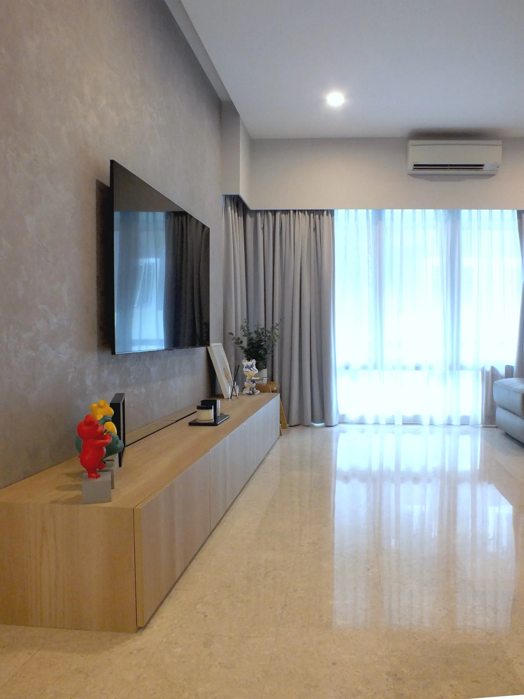

Novena · Completed
K+M Apartment
- Location
- Novena
- Typology
- 3-bedroom condominium
- Area
- 130 m²
- Scope
- Interior
- Status
- Completed
Two demanding careers, and a home that needed to do the opposite of a clinic. The apartment is warm where their working days are clinical, and quiet where they are busy.
Fluted timber screens filter the entrance and living areas, giving the plan a sense of depth without closing it down. Storage is absorbed into the walls, so the rooms stay clear and the eye can rest.